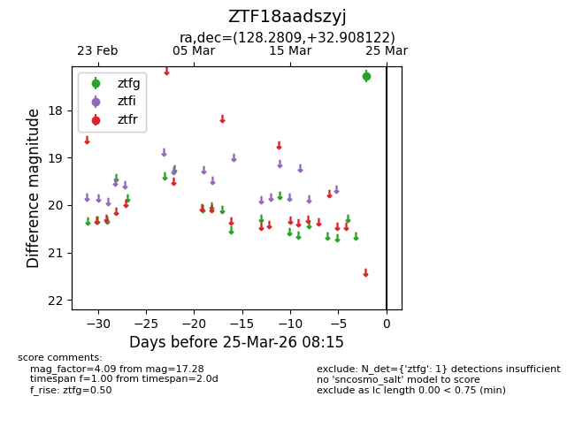
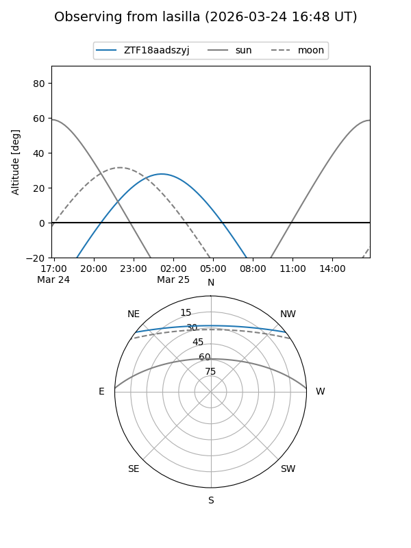
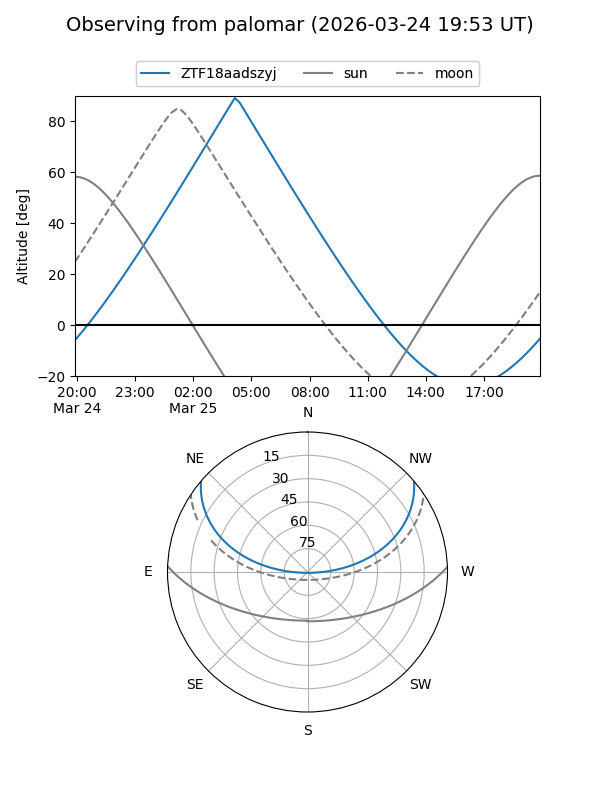

ZTF18aadszyj
Target ZTF18aadszyj at 2026-03-25 08:17
Aliases and brokers:
FINK: link
Lasair: link
ALeRCE: link
alt names
ZTF18aadszyj (ztf,fink_ztf)
Coordinates:
equatorial (ra, dec) = 128.2809,+32.90812
equatorial (HMS+DMS) = 08:33:07.42,+32:54:29.24
galactic (l, b) = (190.1030,+34.64421)
Flags:
Photometry:
last ztfg=17.28
1 ztfg detections
Lightcurve

Visibility


Additional plots